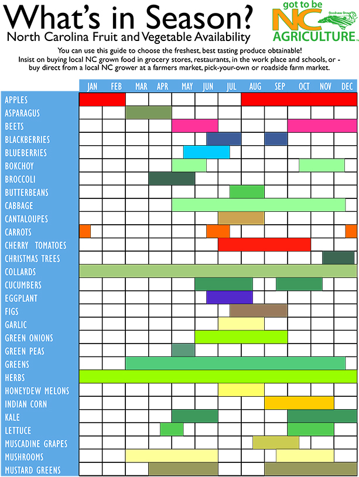

Chapter 2 Sampling, Experiments, and Exploratory Data Analysis
2.1 Data in the Wild
Data is a collection of information about a group, which may include both quantitative and qualitative variables. Data is ubiquitous in today’s society. Healthcare, marketing, history, biology, … basically every field has a quantitative aspect. The quality of data varies greatly from study to study.
2.1.1 Data from Experiments
Some data comes from a well-designed experiment where a researcher uses sound principles to select units and conduct interventions.
For example, a mechanical engineer wants to determine which variables influence overall gas mileage of a certain year and model of a car. Gas mileage would be referred to as the response variable for this study.
After careful consideration, the engineer chooses to investigate a few explanatory variables. They looked at the following factors that they believed may affect the overall gas mileage:
- Tire pressure (low, standard)
- Octane rating of fuel (regular, midgrade, premium)
- Type of driving (defensive, aggressive)
They also choose to control or hold constant the following variables during the implementation of the study:
- Weather conditions
- Route
- Tire type
- Past car usage
The engineer randomly selects 24 cars from the assembly line for that year and model of car (we’ll learn more about the importance of selecting a representative sample of cars shortly). Software is used to randomly assign a treatment or combination of the factors to each car of the 24 cars. For instance, low tire pressure, regulare octane fuel, and defensive driving would be a treatement. The cars would be called the experimental units or (EUs) as they are the unit the treatments are assigned to.
The experiment is run and the gas mileage found for each car. As the car is being measured we’d refer to the car as the observational unit.
This short description exhibits three important concepts in experimental design that we’ll come back to many times.
Experimental Study - researchers manipulate the conditions in which the study is done.
Pillars of experimental design: (Put an outer block around this)
- Randomization - treatments are randomly assigned to the experimental units
- Replication - multiple (independent) experimental units are assigned the same treatment
- Control - study conditions are held constant where possible to reduce variability in the response
2.1.2 Data from Observational Studies
Some data comes from an observational study where the researcher collects data without imposing any changes.
For example, an economist wants to investigate the effects of recently added tariffs on agricultural products to the amount and value of such products that are traded between the United States and Asia. This study would have two response variables, amount and value of each product traded between the two parties.
In order to take into account season variation and time of year, the economist decides to compare the two response variables from the current year - 6 months worth of data - to the average values of the two response variables during the same 6 month periods for the past 5 years. We would refer to the time frame of the data as an explanatory variable. This time frame could be labeled to take on one of two values: no-tariff (past) or tariff (current).
The researcher obtains the data from the census bureau and conducts their analysis.
Notice that the researcher, while certainly being actively involved in the careful consideration of the data to be collected, does not actively intervene or impose a change. This is the key component of an observational study.
Observational Study - researchers collects data without imposing any changes on the study environment.
2.1.3 Observational vs Experimental
You may have noticed that both types of studies have some things in common. For instance, both studies have response (??? so I was thinking about maybe bolding most stats words as we go to point them out to students… thoughts???) variables that characterizes the performance of the study in some sense. Importantly, these response variables have variation. That is, observing the variable is non-deterministic even under identical situations. There are also explanatory variables that the researcher is interested in with regard to their relationship with the response variable.
Beyond that, both studies hope to make conclusions about a larger group using data. This is the idea of statistical inference (??? Do we want to talk about the differences between prediction and inference here? - later???). More formally the group of values, items, or individuals defines the a population of interest and the data collected represents the sample. For the gas mileage example, the population would be all cars of the year and make in question and the sample would be the data on the 24 cars. For the tariff example, the population would be a conceptual population of all future agricultural products traded between the United States and Asia and the sample would be the information from the six years of trade data.
Population - (Possibly conceptual) group of units of interest
Sample - Subset of the population on which we observe data
Statistical Inference - Process of using sample data to make statements or claims about a population (???Usually with the goal of determing which variables are important for a response???)
Both of these studies had to determine how to obtain their observations. For the experiment, 24 cars were used. For the observational study, six years of data were collected. How this data is collected can be extremely important in terms of the types of conclusions that can be made. Data needs to be unbiased and representative of the population in which the researcher hopes to make inference otherwise the conclusions made are likely invalid. We’ll discuss the idea of what makes a good and bad sampling scheme later.
The major difference between the two studies was the active (experimental) and passive (observational) roles played by the researcher. This difference is also of vital importance to the types of conclusions that can be made from the study. A well-designed experiment can often infer causation to the treatments where an observational study cannot.
The conclusions a researcher can make based on how the data were collected and the type of study are outlined in the table below. (??? Probably just remake this table ourselves with our own words. This isn’t exactly ‘their’ original thought or something we need to attribute. ???)

Figure 2.1: Scope of Inference, cite: Khan Academy
Doing an observational study doesn’t mean that your study is bad! An observational study is sometimes done out of necessity when an experiment wouldn’t be ethical or feasible. For the tariff example, there really isn’t a way to conduct an experiment. If we wanted to design an experiment to see if smoking causes lung cancer, that would be unethical because we can’t force people to smoke. The key point is that the implications we can draw will differ greatly between experimental and observational studies and will depend heavily on the quality (in relation to the population) of the data you have.
2.1.4 The Role of Statistics
Statistics is the science of learning from data. It encompasses the collection of data, the design of an experiment, the summarization of data, and the modeling or analysis used in order to make a decision or further scientific knowledge. (???I feel like this definition doesn’t quite get the sampling part right or maybe the holistic process or something - update as needed! JP???)
(This will be changed to a different style of callout - maybe “note”?)
Statistics in every day use usually refers to simply summaries about data (means/averages, proportions, or counts).
Statistics as a field encompasses a much larger range of ideas including how to collect data, model data, and make decisions or come to conclusions when faced with uncertainty.
Statistical methods are needed because data is variable. If we again collected data about the gas mileage of vehicles under the exact same study conditions we’ll get slightly different results. If we observed another six month period of trade data we’ll see different amounts and values. Accounting for this variability in data is a key component of a statistical analysis.
Generally, one should try to take a holistic view of a study. Before any data is collected it is vital to understand the goals and background of the study. These will inform the data you ideally want to collect as well as the data that you are able to collect - which may need to act as a proxy. A plan should be determined for the actual collection and storing of the data. The entire study design will then inform the statistical analysis and conclusions that can be drawn.
Taking this bigger picture view of the problem, we can usually follow these steps (we’ll try to follow these throughout the book!):
- Define the objective of the experiment and understand the background (Define Objective & Background)
- Select appropriate response variables (Select Response)
- Identify sources of variation (Determine Sources of Variation)
- Choose sampling scheme and/or experimental design (Select Design)
- Carry out the study (Do Study)
- Statistically analyze the data (Do Statistical Analysis)
- Draw conclusions from the analysis while considering limitations and the steps above as well as communicate results (Draw Conclusions & Communicate)
We’ll focus on this entire process in our big chapter examples and mostly investigate designed experiments. We attempt to tackle each topic in this text with a problem-based approach. That is, we identify a real-world problem and discuss the relevant statistical ideas in context. At the end of each chapter we provide a recap the main statistical ideas and discuss other important related topics. Where applicable we include a section that outlines some of the mathematical concepts as well as a section to outline software related to the topic.
2.2 Descriptive Study - Farmer’s Market
2.2.1 Define Objective & Background
A nutrition scientist wanted to understand the cleanliness and food hygiene of the vendors at the North Carolina State Farmer’s Market (henceforth the farmer’s market). Secondarily, she wanted to learn about vendor sales to see if there was a relationship with their cleanliness and food hygiene. The researcher had access to the names of each vendor’s business, their general purpose, and the products they sold.
The researcher needed to decide the scope of their study. Formally, they needed to define the population of interest. The population is the group of people or units of interest to the researcher. As her interest centered around food related businesses, she restricted to looking at the vendors which sold horticultural crops. She hoped that conclusions made by her study could apply to all horticulture vendors at the farmer’s market - thus, this is her population.
Note: One could try to do a study at just the North Carolina State Farmer’s Market and extend the results to all farmer’s market in the state or in the south, but that would require many assumptions to be valid.
A list of the horticultural products sold and their is availability is reproduced below.

2.2.2 Select Response
The researcher needed to determine the variables to collect that would best help to answer their questions of interest. These variables that characterize the experiment are called response or target variables.
To investigate the knowledge of hygiene and safety, a short questionnaire was developed to allow the vendor’s head manager (or similar employee) to describe their safety protocol and knowledge:
- For your produce with signs that say “clean” or “washed”, what does this mean?
- How are the foods transported to the market? eg: refrigerated/closed storage
- What food safety risks do you as a vendor worry about?
- Do you require one-use gloves to be used? (Yes or No)
- Do you designate a person in charge of money transactions? (Yes or No)
The researcher also planned to do an assessment of the cleanliness of each vendor’s station at different times. Her team would pick 30 days during the summer in which they’d walk through the vendor stations and collect the following information:
- Overall is the station clean (Yes or No)
- Is anyone smoking around the food products? (Yes or No)
- Are tables covered? (Yes or No) If so, what is the material?
- Do employees appear to be clean? (Yes or No)
- Are one-use gloves used? (Yes or No)
- Is there a designated person in charge of money transactions (Yes or No)
She noted that there is a yearly cycle to the products sold and decided to collect vendors sales information by looking at the (AMT) amount sold in the last year (in dollars), the (PURCHASE) total number of purchases made in the last year, and the (NUM_ITEMS) total number of items sold in the last year. For the last variable they had to decide how to measure the number of items sold for the different types of crops. For most of the crops looking at the total weight (in lbs) sold made sense. For some other measures were needed. For example, for sweet corn the number of ears sold would be recorded.
You can see that there are many decisions that the researcher must make in simply deciding the response variables to collect! A poor choice here can make or break a study.
2.2.3 Determine Sources of Variation
The response variables clearly have some relationship to other variables that could be collected. For instance, the NUM_ITEMS variable is clearly going to be different based upon what crops the vendor sells. The AMT variable would differ depending on the size of the vendor’s inventory. These are examples of explanatory variables or variables that define the study conditions. Explanatory variables go by many names such as predictors, features, or independent variables.
A main consideration about whether or not to record a variable is whether or not the variable would be related to a variation in a response variable. Since the response variables are truly what is of interest, there is really not much of a point in recording variables that likely have no relationship with it.
Choosing the explanatory variables can also indicate further questions of interest. For instance, the researcher may want to compare the percent of “Yes” for the overall cleanliness score for vendors that mainly sell vegetables to those that mainly sell fruit leading to a comparison across groups being of interest. She may want to try to model the AMT of canteloupe sold as a function of cleanliness score.
The average amount for the population or a subpopulation would be referred to as a parameter of interest. Formally, a parameter is a summary measure about a population. Common parameters investigated include a mean, proportion, median, or variance of different subgroups of the population.
The explanatory variables she collected about the vendors included the types of crops sold, the services they provide (grow, pack, and/or ship), and whether or not they are a “Got to be NC member”.
For the questionnaire, she added the additional questions below:
- Are there any organic or synthetic chemicals/fertilizers/pesticides/manures used on the products?
- Are all foods grown/processed by the vendors?
- What kind of soil were the products grown in? eg: organic/compost/plant material
For the assessment of cleanliness, she added the following question:
- How many people are working?
Should we talk about formalizing the other questions they want to answer here??
2.2.4 Select Design
For this study the researchers aren’t interested in doing an intervention so an observational study was being done. The major task to consider for the observational study is how to select participants from the population. The subset of the population we (attempt to) observe our data on is called the sample. The sample size is the number of measurements in the sample.
Ideally we would measure every member of our population. This is called a census. If a census can be done then values of a population’s parameters can be found exactly by simply summarizing the population data. However, conducting a census can be extremely costly or time intensive so most of the time a census cannot be done. This means that the information we collect would likely be different if we collected it again. Accounting for this variability is the main reason statistical analysis is needed.
How the researcher selects their sample is extremely important. This method is often referred to as the sampling scheme. Using a statistically valid sampling scheme is vital to the assumptions made when doing statistical inference. A valid sampling scheme implies that every member of the population has a known and non-zero chance of inclusion in the sample.
There are many good ways to select the sample and many bad ways. Need to get more info about the farmer’s market to finish this part (Talk about bad first and why bad - visuals too) Talk about good and why good - visuals too.
This idea is further fleshed out at the end of the chapter. (reference/link this)
Here they chose to do a stratified sample to make sure that they didn’t leave out any important subgroups.
Should we talk about formalizing the other questions they want to answer here??
2.2.5 Do Study
Go and talk to chosen vendors. May have some non-response issues. Ideally a contingency for this should be developed when considering the sampling scheme.
Should we talk about formalizing the other questions they want to answer here??
2.2.6 Do Statistical Analysis
Should we talk about formalizing the other questions they want to answer here??
The major goals of this study were simply to describe the vendors at the farmer’s market. In this case we can produce numerical and graphical summaries.
Careful discussion of not selecting a modeling technique based on this unless it is a pilot study or an exploratory study else we have increased our nominal type I error rate…
Spend a lot of time here talking about graphs of different types. Sample means, sample variances, etc.
Discuss population curves vs sample histograms and the relationship.
Not a formal test here but comparisons of interest etc.
2.2.7 Draw Conclusions & Communicate
What actionable things have we found? Likely some trends to investigate further. Perhaps run an experiment to formally see if some alteration can be effective.
What can we conclude realistically from this data? To what population are we talking?
2.3 Statistical Testing Ideas - Simulated Experiment
2.3.1 Define Objective & Background
2.3.2 Select Response
2.3.3 Determine Sources of Variation
2.3.4 Select Design
2.3.5 Do Study
2.3.6 Do Statistical Analysis
2.3.7 Draw Conclusions & Communicate
2.4 Statistical Ideas and Concepts
2.4.1 Study Purpose
Prediction vs inference
Param, sample, etc.
2.4.2 Summarizing Data
Terminology of variables
Numerical and graphical summaries
Sample of Random Variable’s realizations, sample distribution vs population, modeling ideas
Approx probabilities and quantiles vs theoretical
Summaries of distributions (center, spread, graphs)
2.4.3 Study Types
Ob vs exp
Good discussion of what makes a good sampling design. Maybe a statified example like the river and selecting houses example as a quick expose of the issues with not doing a truly random sampling technique.
2.4.3.1 Examples of why Observational Studies Can be Bad
George Will WP column about SAT vs amount of money spent Pisani and Perv? many bad examples of inference